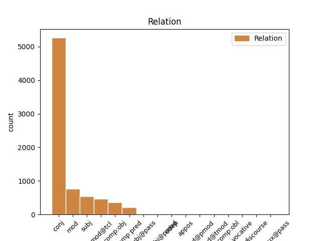
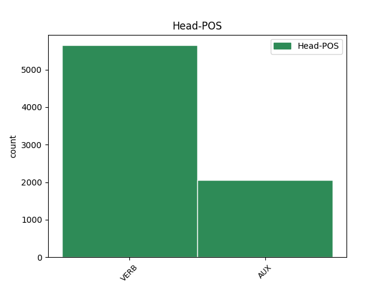
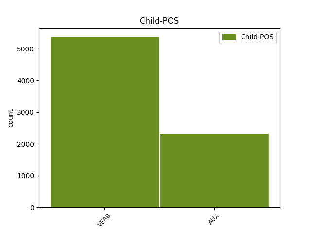

Distribution of features within this leaf



Agreement Rules sorted by frequency.
- When the dependent token is the conjunct(conj) of the head token, and the head token is VERB and the dependent token is VERB.
1 Pentru _ _ _ _ 0 _ _ _
2 ziua _ _ _ _ 0 _ _ _
3 de _ _ _ _ 0 _ _ _
4 arătură _ _ _ _ 0 _ _ _
5 , _ _ _ _ 0 _ _ _
6 de _ _ _ _ 0 _ _ _
7 va _ _ _ _ 0 _ _ _
8 avea _ _ _ _ 0 _ _ _
9 stăpînul _ _ _ _ 0 _ _ _
10 moșii _ _ _ _ 0 _ _ _
11 trebuință _ _ _ _ 0 _ _ _
12 , _ _ _ _ 0 _ _ _
13 ca _ _ _ _ 0 _ _ _
14 să _ _ _ _ 0 _ _ _
15 i- _ _ _ _ 0 _ _ _
16 o _ _ _ _ 0 _ _ _
17 facă _ _ _ _ 0 _ _ _
18 clăcașii _ _ _ _ 0 _ _ _
19 în _ _ _ _ 0 _ _ _
20 lucru _ _ _ _ 0 _ _ _
21 , _ _ _ _ 0 _ _ _
22 sînt _ _ _ _ 0 _ _ _
23 datori _ _ _ _ 0 _ _ _
24 ca _ _ _ _ 0 _ _ _
25 toate _ _ _ _ 0 _ _ _
26 plugurile _ _ _ _ 0 _ _ _
27 cîte _ _ _ _ 0 _ _ _
28 să _ _ _ _ 0 _ _ _
29 întocmesc _ _ _ _ 0 _ _ _
30 pe _ _ _ _ 0 _ _ _
31 moșia _ _ _ _ 0 _ _ _
32 acelui _ _ _ _ 0 _ _ _
33 stăpîn _ _ _ _ 0 _ _ _
34 primăvara _ _ _ _ 0 _ _ _
35 , _ _ _ _ 0 _ _ _
36 să _ _ _ _ 0 _ _ _
37 -i _ _ _ _ 0 _ _ _
38 facă _ _ _ _ 0 _ _ _
39 cîte _ _ _ _ 0 _ _ _
40 o _ _ _ _ 0 _ _ _
41 zi _ _ _ _ 0 _ _ _
42 de _ _ _ _ 0 _ _ _
43 arătură _ _ _ _ 0 _ _ _
44 , _ _ _ _ 0 _ _ _
45 ori _ _ _ _ 0 _ _ _
46 primăvara _ _ _ _ 0 _ _ _
47 , _ _ _ _ 0 _ _ _
48 sau _ _ _ _ 0 _ _ _
49 toamna _ _ _ _ 0 _ _ _
50 , _ _ _ _ 0 _ _ _
51 iară _ _ _ _ 0 _ _ _
52 nu _ _ _ _ 0 _ _ _
53 fieșcare _ _ _ _ 0 _ _ _
54 clăcaș _ _ _ _ 0 _ _ _
55 să _ _ _ _ 0 _ _ _
56 -i _ _ _ _ 0 _ _ _
57 facă _ _ _ _ 0 _ _ _
58 cîte _ _ _ _ 0 _ _ _
59 o _ _ _ _ 0 _ _ _
60 zi _ _ _ _ 0 _ _ _
61 de _ _ _ _ 0 _ _ _
62 arătură _ _ _ _ 0 _ _ _
63 , _ _ _ _ 0 _ _ _
64 căci _ _ _ _ 0 _ _ _
65 mai _ _ _ _ 0 _ _ _
66 mulți _ _ _ _ 0 _ _ _
67 oameni _ _ _ _ 0 _ _ _
68 nu _ _ _ _ 0 _ _ _
69 au avea VERB Vmip3p Mood=Ind|Number=Plur|Person=3|Tense=Pres|VerbForm=Fin 0 _ _ _
70 fieșcare _ _ _ _ 0 _ _ _
71 plugul _ _ _ _ 0 _ _ _
72 lui _ _ _ _ 0 _ _ _
73 , _ _ _ _ 0 _ _ _
74 ci _ _ _ _ 0 _ _ _
75 să _ _ _ _ 0 _ _ _
76 întovărășesc întovărăși VERB Vmsp1s Mood=Sub|Number=Sing|Person=1|Tense=Pres|VerbForm=Fin 69 conj _ ref=COMPLETARE.3
77 cîte _ _ _ _ 0 _ _ _
78 trei _ _ _ _ 0 _ _ _
79 și _ _ _ _ 0 _ _ _
80 cîte _ _ _ _ 0 _ _ _
81 patru _ _ _ _ 0 _ _ _
82 de _ _ _ _ 0 _ _ _
83 fac _ _ _ _ 0 _ _ _
84 un _ _ _ _ 0 _ _ _
85 plug _ _ _ _ 0 _ _ _
86 . _ _ _ _ 0 _ _ _
1 În _ _ _ _ 0 _ _ _
2 scurt _ _ _ _ 0 _ _ _
3 care _ _ _ _ 0 _ _ _
4 dintre _ _ _ _ 0 _ _ _
5 cei _ _ _ _ 0 _ _ _
6 ce _ _ _ _ 0 _ _ _
7 să _ _ _ _ 0 _ _ _
8 judecă _ _ _ _ 0 _ _ _
9 să _ _ _ _ 0 _ _ _
10 va _ _ _ _ 0 _ _ _
11 dovedi _ _ _ _ 0 _ _ _
12 că _ _ _ _ 0 _ _ _
13 fiindcă _ _ _ _ 0 _ _ _
14 era fi AUX Vaii3s Mood=Ind|Number=Sing|Person=3|Tense=Imp 0 _ _ _
15 datoriu _ _ _ _ 0 _ _ _
16 , _ _ _ _ 0 _ _ _
17 și _ _ _ _ 0 _ _ _
18 cît _ _ _ _ 0 _ _ _
19 era fi AUX Vaii3s Mood=Ind|Number=Sing|Person=3|Tense=Imp 14 conj _ ref=PART_V_CAP_3.11
20 datoriu _ _ _ _ 0 _ _ _
21 protivnicului _ _ _ _ 0 _ _ _
22 său _ _ _ _ 0 _ _ _
23 , _ _ _ _ 0 _ _ _
24 nu _ _ _ _ 0 _ _ _
25 i- _ _ _ _ 0 _ _ _
26 au _ _ _ _ 0 _ _ _
27 făcut _ _ _ _ 0 _ _ _
28 îndestulare _ _ _ _ 0 _ _ _
29 , _ _ _ _ 0 _ _ _
30 acela _ _ _ _ 0 _ _ _
31 să _ _ _ _ 0 _ _ _
32 să _ _ _ _ 0 _ _ _
33 îndatoreze _ _ _ _ 0 _ _ _
34 să _ _ _ _ 0 _ _ _
35 -i _ _ _ _ 0 _ _ _
36 plătească _ _ _ _ 0 _ _ _
37 și _ _ _ _ 0 _ _ _
38 cheltuiala _ _ _ _ 0 _ _ _
39 judecății _ _ _ _ 0 _ _ _
40 . _ _ _ _ 0 _ _ _
1 Cîți _ _ _ _ 0 _ _ _
2 din _ _ _ _ 0 _ _ _
3 cei _ _ _ _ 0 _ _ _
4 ce _ _ _ _ 0 _ _ _
5 au _ _ _ _ 0 _ _ _
6 pricină _ _ _ _ 0 _ _ _
7 de _ _ _ _ 0 _ _ _
8 judecată _ _ _ _ 0 _ _ _
9 , _ _ _ _ 0 _ _ _
10 chemîndu- _ _ _ _ 0 _ _ _
11 să _ _ _ _ 0 _ _ _
12 în _ _ _ _ 0 _ _ _
13 doao _ _ _ _ 0 _ _ _
14 rănduri _ _ _ _ 0 _ _ _
15 de _ _ _ _ 0 _ _ _
16 cătră _ _ _ _ 0 _ _ _
17 judecători _ _ _ _ 0 _ _ _
18 , _ _ _ _ 0 _ _ _
19 nu _ _ _ _ 0 _ _ _
20 vor _ _ _ _ 0 _ _ _
21 veni veni VERB Vmip3s Mood=Ind|Number=Sing|Person=3|Tense=Pres|VerbForm=Fin 0 _ _ _
22 , _ _ _ _ 0 _ _ _
23 și _ _ _ _ 0 _ _ _
24 să _ _ _ _ 0 _ _ _
25 vor vrea AUX Vaip3p Mood=Ind|Number=Plur|Person=3|Tense=Pres 21 conj _ ref=PART_V_CAP_4.4
26 osîndi _ _ _ _ 0 _ _ _
27 , _ _ _ _ 0 _ _ _
28 aceia _ _ _ _ 0 _ _ _
29 nu _ _ _ _ 0 _ _ _
30 pot _ _ _ _ 0 _ _ _
31 porni _ _ _ _ 0 _ _ _
32 Apellație _ _ _ _ 0 _ _ _
33 . _ _ _ _ 0 _ _ _
1 Cînd _ _ _ _ 0 _ _ _
2 adecă _ _ _ _ 0 _ _ _
3 lucrul _ _ _ _ 0 _ _ _
4 ce _ _ _ _ 0 _ _ _
5 să _ _ _ _ 0 _ _ _
6 cere _ _ _ _ 0 _ _ _
7 iaste fi AUX Vaip3s Mood=Ind|Number=Sing|Person=3|Tense=Pres 0 _ _ _
8 o _ _ _ _ 0 _ _ _
9 vie _ _ _ _ 0 _ _ _
10 , _ _ _ _ 0 _ _ _
11 și _ _ _ _ 0 _ _ _
12 cuvintele _ _ _ _ 0 _ _ _
13 amîndurora _ _ _ _ 0 _ _ _
14 prigonitelor _ _ _ _ 0 _ _ _
15 părți _ _ _ _ 0 _ _ _
16 , _ _ _ _ 0 _ _ _
17 au avea VERB Vmip3p Mood=Ind|Number=Plur|Person=3|Tense=Pres|VerbForm=Fin 7 conj _ ref=PART_V_CAP_2.3b
18 puteare _ _ _ _ 0 _ _ _
19 deopotrivă _ _ _ _ 0 _ _ _
20 , _ _ _ _ 0 _ _ _
21 cel _ _ _ _ 0 _ _ _
22 ce _ _ _ _ 0 _ _ _
23 să _ _ _ _ 0 _ _ _
24 află _ _ _ _ 0 _ _ _
25 în _ _ _ _ 0 _ _ _
26 stăpînirea _ _ _ _ 0 _ _ _
27 viei _ _ _ _ 0 _ _ _
28 acela _ _ _ _ 0 _ _ _
29 are _ _ _ _ 0 _ _ _
30 dreptate _ _ _ _ 0 _ _ _
31 . _ _ _ _ 0 _ _ _
1 Cartea _ _ _ _ 0 _ _ _
2 de _ _ _ _ 0 _ _ _
3 blestem _ _ _ _ 0 _ _ _
4 să _ _ _ _ 0 _ _ _
5 dă da VERB Vmip3s Mood=Ind|Number=Sing|Person=3|Tense=Pres|VerbForm=Fin 0 _ _ _
6 unde _ _ _ _ 0 _ _ _
7 , _ _ _ _ 0 _ _ _
8 și _ _ _ _ 0 _ _ _
9 cînd _ _ _ _ 0 _ _ _
10 , _ _ _ _ 0 _ _ _
11 și _ _ _ _ 0 _ _ _
12 cum _ _ _ _ 0 _ _ _
13 să _ _ _ _ 0 _ _ _
14 dă da VERB Vmip3s Mood=Ind|Number=Sing|Person=3|Tense=Pres|VerbForm=Fin 5 mod _ ref=PART_V_CAP_2d.54
15 și _ _ _ _ 0 _ _ _
16 jurămîntul _ _ _ _ 0 _ _ _
17 , _ _ _ _ 0 _ _ _
18 drept _ _ _ _ 0 _ _ _
19 aceia _ _ _ _ 0 _ _ _
20 . _ _ _ _ 0 _ _ _
1 Cînd _ _ _ _ 0 _ _ _
2 judecătorii _ _ _ _ 0 _ _ _
3 vor vrea AUX Vaip3p Mood=Ind|Number=Plur|Person=3|Tense=Pres 13 mod _ ref=PART_V_CAP_3.6
4 cunoaște _ _ _ _ 0 _ _ _
5 , _ _ _ _ 0 _ _ _
6 că _ _ _ _ 0 _ _ _
7 cu _ _ _ _ 0 _ _ _
8 greșală _ _ _ _ 0 _ _ _
9 au _ _ _ _ 0 _ _ _
10 hotărît _ _ _ _ 0 _ _ _
11 , _ _ _ _ 0 _ _ _
12 volnici _ _ _ _ 0 _ _ _
13 sînt fi AUX Vaip3p Mood=Ind|Number=Plur|Person=3|Tense=Pres 0 _ _ _
14 înaintea _ _ _ _ 0 _ _ _
15 Apellații _ _ _ _ 0 _ _ _
16 prigonitoarelor _ _ _ _ 0 _ _ _
17 părți _ _ _ _ 0 _ _ _
18 , _ _ _ _ 0 _ _ _
19 să _ _ _ _ 0 _ _ _
20 -și _ _ _ _ 0 _ _ _
21 ia _ _ _ _ 0 _ _ _
22 înapoi _ _ _ _ 0 _ _ _
23 hotărîrea _ _ _ _ 0 _ _ _
24 , _ _ _ _ 0 _ _ _
25 și _ _ _ _ 0 _ _ _
26 să _ _ _ _ 0 _ _ _
27 o _ _ _ _ 0 _ _ _
28 îndrepteaze _ _ _ _ 0 _ _ _
29 , _ _ _ _ 0 _ _ _
30 iară _ _ _ _ 0 _ _ _
31 după _ _ _ _ 0 _ _ _
32 Apellație _ _ _ _ 0 _ _ _
33 nu _ _ _ _ 0 _ _ _
34 . _ _ _ _ 0 _ _ _
1 Aseamenea _ _ _ _ 0 _ _ _
2 să _ _ _ _ 0 _ _ _
3 să _ _ _ _ 0 _ _ _
4 urmeaze urmeaze VERB Vmsp3 Mood=Sub|Person=3|Tense=Pres|VerbForm=Fin 0 _ _ _
5 de _ _ _ _ 0 _ _ _
6 Dumnialui _ _ _ _ 0 _ _ _
7 Vel _ _ _ _ 0 _ _ _
8 Spătariu _ _ _ _ 0 _ _ _
9 , _ _ _ _ 0 _ _ _
10 Dumnialui _ _ _ _ 0 _ _ _
11 Vel _ _ _ _ 0 _ _ _
12 Agă _ _ _ _ 0 _ _ _
13 și _ _ _ _ 0 _ _ _
14 de _ _ _ _ 0 _ _ _
15 Boerii _ _ _ _ 0 _ _ _
16 Ispravnici _ _ _ _ 0 _ _ _
17 , _ _ _ _ 0 _ _ _
18 cînd _ _ _ _ 0 _ _ _
19 iaste fi AUX Vaip3s Mood=Ind|Number=Sing|Person=3|Tense=Pres 4 mod _ ref=PART_V_CAP_3.15d
20 vreo _ _ _ _ 0 _ _ _
21 hotărîre _ _ _ _ 0 _ _ _
22 de _ _ _ _ 0 _ _ _
23 la _ _ _ _ 0 _ _ _
24 judecățile _ _ _ _ 0 _ _ _
25 Dumnialor _ _ _ _ 0 _ _ _
26 . _ _ _ _ 0 _ _ _
1 Cîți _ _ _ _ 0 _ _ _
2 din _ _ _ _ 0 _ _ _
3 cei _ _ _ _ 0 _ _ _
4 ce _ _ _ _ 0 _ _ _
5 au _ _ _ _ 0 _ _ _
6 judecată _ _ _ _ 0 _ _ _
7 vor vrea AUX Vaip3p Mood=Ind|Number=Plur|Person=3|Tense=Pres 24 subj _ ref=PART_V_CAP_4.5
8 da _ _ _ _ 0 _ _ _
9 în _ _ _ _ 0 _ _ _
10 scris _ _ _ _ 0 _ _ _
11 la _ _ _ _ 0 _ _ _
12 judecată _ _ _ _ 0 _ _ _
13 că _ _ _ _ 0 _ _ _
14 să _ _ _ _ 0 _ _ _
15 vor _ _ _ _ 0 _ _ _
16 mulțămi _ _ _ _ 0 _ _ _
17 pre _ _ _ _ 0 _ _ _
18 hotărîrea _ _ _ _ 0 _ _ _
19 acei _ _ _ _ 0 _ _ _
20 judecăți _ _ _ _ 0 _ _ _
21 , _ _ _ _ 0 _ _ _
22 aceia _ _ _ _ 0 _ _ _
23 nu _ _ _ _ 0 _ _ _
24 pot putea AUX Vaip3p Mood=Ind|Number=Plur|Person=3|Tense=Pres 0 _ _ _
25 porni _ _ _ _ 0 _ _ _
26 Apellație _ _ _ _ 0 _ _ _
27 . _ _ _ _ 0 _ _ _
1 Cine _ _ _ _ 0 _ _ _
2 cere cere VERB Vmip3s Mood=Ind|Number=Sing|Person=3|Tense=Pres|VerbForm=Fin 4 subj _ ref=PART_V_CAP_2.4
3 atunci _ _ _ _ 0 _ _ _
4 căștigă căștigă VERB Vmip2s Mood=Ind|Number=Sing|Person=2|Tense=Pres|VerbForm=Fin 0 _ _ _
5 , _ _ _ _ 0 _ _ _
6 cînd _ _ _ _ 0 _ _ _
7 va _ _ _ _ 0 _ _ _
8 dovedi _ _ _ _ 0 _ _ _
9 că _ _ _ _ 0 _ _ _
10 lucrul _ _ _ _ 0 _ _ _
11 ce _ _ _ _ 0 _ _ _
12 să _ _ _ _ 0 _ _ _
13 cere _ _ _ _ 0 _ _ _
14 iaste _ _ _ _ 0 _ _ _
15 al _ _ _ _ 0 _ _ _
16 lui _ _ _ _ 0 _ _ _
17 , _ _ _ _ 0 _ _ _
18 iară _ _ _ _ 0 _ _ _
19 nu _ _ _ _ 0 _ _ _
20 cînd _ _ _ _ 0 _ _ _
21 va _ _ _ _ 0 _ _ _
22 dovedi _ _ _ _ 0 _ _ _
23 că _ _ _ _ 0 _ _ _
24 nu _ _ _ _ 0 _ _ _
25 iaste _ _ _ _ 0 _ _ _
26 al _ _ _ _ 0 _ _ _
27 protivnicului _ _ _ _ 0 _ _ _
28 său _ _ _ _ 0 _ _ _
29 . _ _ _ _ 0 _ _ _
1 De _ _ _ _ 0 _ _ _
2 câte _ _ _ _ 0 _ _ _
3 ori _ _ _ _ 0 _ _ _
4 la _ _ _ _ 0 _ _ _
5 tocmeli _ _ _ _ 0 _ _ _
6 o _ _ _ _ 0 _ _ _
7 vorbă _ _ _ _ 0 _ _ _
8 are avea VERB Vmip3s Mood=Ind|Number=Sing|Person=3|Tense=Pres|VerbForm=Fin 12 mod@tcl _ ref=PART_V_CAP_2a.12
9 doao _ _ _ _ 0 _ _ _
10 înțelegeri _ _ _ _ 0 _ _ _
11 , _ _ _ _ 0 _ _ _
12 priimim primi VERB Vmip1p Mood=Ind|Number=Plur|Person=1|Tense=Pres|VerbForm=Fin 0 _ _ _
13 ceia _ _ _ _ 0 _ _ _
14 ce _ _ _ _ 0 _ _ _
15 să _ _ _ _ 0 _ _ _
16 potriveaște _ _ _ _ 0 _ _ _
17 , _ _ _ _ 0 _ _ _
18 sau _ _ _ _ 0 _ _ _
19 ceia _ _ _ _ 0 _ _ _
20 ce _ _ _ _ 0 _ _ _
21 iaste _ _ _ _ 0 _ _ _
22 spre _ _ _ _ 0 _ _ _
23 siguranția _ _ _ _ 0 _ _ _
24 lucrului _ _ _ _ 0 _ _ _
25 tocmit _ _ _ _ 0 _ _ _
26 . _ _ _ _ 0 _ _ _
1 Cine _ _ _ _ 0 _ _ _
2 va _ _ _ _ 0 _ _ _
3 arăta _ _ _ _ 0 _ _ _
4 copie _ _ _ _ 0 _ _ _
5 de _ _ _ _ 0 _ _ _
6 carte _ _ _ _ 0 _ _ _
7 , _ _ _ _ 0 _ _ _
8 iaste fi AUX Vaip3s Mood=Ind|Number=Sing|Person=3|Tense=Pres 0 _ _ _
9 datoriu _ _ _ _ 0 _ _ _
10 cînd _ _ _ _ 0 _ _ _
11 i _ _ _ _ 0 _ _ _
12 să _ _ _ _ 0 _ _ _
13 va vrea AUX Vaip3s Mood=Ind|Number=Sing|Person=3|Tense=Pres 8 mod@tcl _ ref=PART_V_CAP_2a.29
14 cere _ _ _ _ 0 _ _ _
15 să _ _ _ _ 0 _ _ _
16 scoață _ _ _ _ 0 _ _ _
17 și _ _ _ _ 0 _ _ _
18 pre _ _ _ _ 0 _ _ _
19 cea _ _ _ _ 0 _ _ _
20 adevărată _ _ _ _ 0 _ _ _
21 , _ _ _ _ 0 _ _ _
22 sau _ _ _ _ 0 _ _ _
23 îndată _ _ _ _ 0 _ _ _
24 avîndu _ _ _ _ 0 _ _ _
25 -o _ _ _ _ 0 _ _ _
26 la _ _ _ _ 0 _ _ _
27 îndemână _ _ _ _ 0 _ _ _
28 , _ _ _ _ 0 _ _ _
29 sau _ _ _ _ 0 _ _ _
30 cu _ _ _ _ 0 _ _ _
31 soroc _ _ _ _ 0 _ _ _
32 de _ _ _ _ 0 _ _ _
33 nu _ _ _ _ 0 _ _ _
34 o _ _ _ _ 0 _ _ _
35 va _ _ _ _ 0 _ _ _
36 avea _ _ _ _ 0 _ _ _
37 la _ _ _ _ 0 _ _ _
38 îndemână _ _ _ _ 0 _ _ _
39 . _ _ _ _ 0 _ _ _
1 Cîte _ _ _ _ 0 _ _ _
2 lucruri _ _ _ _ 0 _ _ _
3 jăfuite _ _ _ _ 0 _ _ _
4 să _ _ _ _ 0 _ _ _
5 găsesc găsi VERB Vmsp1s Mood=Sub|Number=Sing|Person=1|Tense=Pres|VerbForm=Fin 17 comp:obj _ ref=PART_V_CAP_2.3
6 la _ _ _ _ 0 _ _ _
7 tîlhari _ _ _ _ 0 _ _ _
8 să _ _ _ _ 0 _ _ _
9 să _ _ _ _ 0 _ _ _
10 cerceteaze _ _ _ _ 0 _ _ _
11 ale _ _ _ _ 0 _ _ _
12 cui _ _ _ _ 0 _ _ _
13 sînt _ _ _ _ 0 _ _ _
14 și _ _ _ _ 0 _ _ _
15 să _ _ _ _ 0 _ _ _
16 să _ _ _ _ 0 _ _ _
17 dea da VERB Vmsp3 Mood=Sub|Person=3|Tense=Pres|VerbForm=Fin 0 _ _ _
18 stăpînului _ _ _ _ 0 _ _ _
19 acelor _ _ _ _ 0 _ _ _
20 lucruri _ _ _ _ 0 _ _ _
21 . _ _ _ _ 0 _ _ _
1 Judecătorii _ _ _ _ 0 _ _ _
2 înaintea _ _ _ _ 0 _ _ _
3 judecății _ _ _ _ 0 _ _ _
4 și _ _ _ _ 0 _ _ _
5 hotărîrii _ _ _ _ 0 _ _ _
6 să _ _ _ _ 0 _ _ _
7 nu _ _ _ _ 0 _ _ _
8 facă _ _ _ _ 0 _ _ _
9 secvestru _ _ _ _ 0 _ _ _
10 lucruri _ _ _ _ 0 _ _ _
11 de _ _ _ _ 0 _ _ _
12 ale _ _ _ _ 0 _ _ _
13 celui _ _ _ _ 0 _ _ _
14 datoriu _ _ _ _ 0 _ _ _
15 pentru _ _ _ _ 0 _ _ _
16 datorie _ _ _ _ 0 _ _ _
17 , _ _ _ _ 0 _ _ _
18 afară _ _ _ _ 0 _ _ _
19 numai _ _ _ _ 0 _ _ _
20 cînd _ _ _ _ 0 _ _ _
21 împrumutătoriul _ _ _ _ 0 _ _ _
22 va _ _ _ _ 0 _ _ _
23 da _ _ _ _ 0 _ _ _
24 chezași _ _ _ _ 0 _ _ _
25 , _ _ _ _ 0 _ _ _
26 sau _ _ _ _ 0 _ _ _
27 va _ _ _ _ 0 _ _ _
28 pune _ _ _ _ 0 _ _ _
29 zălog _ _ _ _ 0 _ _ _
30 cu _ _ _ _ 0 _ _ _
31 legătură _ _ _ _ 0 _ _ _
32 ca _ _ _ _ 0 _ _ _
33 de _ _ _ _ 0 _ _ _
34 să _ _ _ _ 0 _ _ _
35 va _ _ _ _ 0 _ _ _
36 dovedi _ _ _ _ 0 _ _ _
37 după _ _ _ _ 0 _ _ _
38 judecată _ _ _ _ 0 _ _ _
39 secvestru _ _ _ _ 0 _ _ _
40 drept _ _ _ _ 0 _ _ _
41 cuvînt _ _ _ _ 0 _ _ _
42 , _ _ _ _ 0 _ _ _
43 să _ _ _ _ 0 _ _ _
44 fie _ _ _ _ 0 _ _ _
45 bine _ _ _ _ 0 _ _ _
46 făcut _ _ _ _ 0 _ _ _
47 , _ _ _ _ 0 _ _ _
48 iară _ _ _ _ 0 _ _ _
49 de _ _ _ _ 0 _ _ _
50 nu _ _ _ _ 0 _ _ _
51 , _ _ _ _ 0 _ _ _
52 să _ _ _ _ 0 _ _ _
53 răspunză răspunde VERB Vmsp3 Mood=Sub|Person=3|Tense=Pres|VerbForm=Fin 0 _ _ _
54 celui _ _ _ _ 0 _ _ _
55 datoriu _ _ _ _ 0 _ _ _
56 , _ _ _ _ 0 _ _ _
57 cîtă _ _ _ _ 0 _ _ _
58 pagubă _ _ _ _ 0 _ _ _
59 cu _ _ _ _ 0 _ _ _
60 nedreptate _ _ _ _ 0 _ _ _
61 i _ _ _ _ 0 _ _ _
62 s _ _ _ _ 0 _ _ _
63 -au avea AUX Vaip3s Mood=Ind|Number=Sing|Person=3|Tense=Pres 53 comp:obj _ ref=PART_V_CAP_3.7
64 pricinuit _ _ _ _ 0 _ _ _
65 cu _ _ _ _ 0 _ _ _
66 secvestru _ _ _ _ 0 _ _ _
67 . _ _ _ _ 0 _ _ _
1 Tîlnarii _ _ _ _ 0 _ _ _
2 sînt fi AUX Vaip3p Mood=Ind|Number=Plur|Person=3|Tense=Pres 0 _ _ _
3 cîți _ _ _ _ 0 _ _ _
4 înarmați _ _ _ _ 0 _ _ _
5 es ieși VERB Vmip3p Mood=Ind|Number=Plur|Person=3|Tense=Pres|VerbForm=Fin 2 comp:pred _ ref=PART_V_CAP_2.1
6 înaintea _ _ _ _ 0 _ _ _
7 oamenilor _ _ _ _ 0 _ _ _
8 , _ _ _ _ 0 _ _ _
9 sau _ _ _ _ 0 _ _ _
10 îi _ _ _ _ 0 _ _ _
11 pîndesc _ _ _ _ 0 _ _ _
12 la _ _ _ _ 0 _ _ _
13 drumuri _ _ _ _ 0 _ _ _
14 , _ _ _ _ 0 _ _ _
15 sau _ _ _ _ 0 _ _ _
16 năvălesc _ _ _ _ 0 _ _ _
17 la _ _ _ _ 0 _ _ _
18 lăcașurile _ _ _ _ 0 _ _ _
19 lor _ _ _ _ 0 _ _ _
20 , _ _ _ _ 0 _ _ _
21 și _ _ _ _ 0 _ _ _
22 jăfuesc _ _ _ _ 0 _ _ _
23 , _ _ _ _ 0 _ _ _
24 și _ _ _ _ 0 _ _ _
25 despoae _ _ _ _ 0 _ _ _
26 . _ _ _ _ 0 _ _ _
1 Fiind _ _ _ _ 0 _ _ _
2 orînduit _ _ _ _ 0 _ _ _
3 de _ _ _ _ 0 _ _ _
4 am _ _ _ _ 0 _ _ _
5 protocolit _ _ _ _ 0 _ _ _
6 toate _ _ _ _ 0 _ _ _
7 acestea _ _ _ _ 0 _ _ _
8 Prăvili _ _ _ _ 0 _ _ _
9 după _ _ _ _ 0 _ _ _
10 izvoadele _ _ _ _ 0 _ _ _
11 ce _ _ _ _ 0 _ _ _
12 prin _ _ _ _ 0 _ _ _
13 sfat _ _ _ _ 0 _ _ _
14 de _ _ _ _ 0 _ _ _
15 obște _ _ _ _ 0 _ _ _
16 s _ _ _ _ 0 _ _ _
17 -au _ _ _ _ 0 _ _ _
18 alcătuit _ _ _ _ 0 _ _ _
19 și _ _ _ _ 0 _ _ _
20 găsindu _ _ _ _ 0 _ _ _
21 -le _ _ _ _ 0 _ _ _
22 întocmai _ _ _ _ 0 _ _ _
23 așezate _ _ _ _ 0 _ _ _
24 din _ _ _ _ 0 _ _ _
25 cuvînt _ _ _ _ 0 _ _ _
26 în _ _ _ _ 0 _ _ _
27 cuvînt _ _ _ _ 0 _ _ _
28 și _ _ _ _ 0 _ _ _
29 fără _ _ _ _ 0 _ _ _
30 cîtuși _ _ _ _ 0 _ _ _
31 de _ _ _ _ 0 _ _ _
32 puțină _ _ _ _ 0 _ _ _
33 schimbare _ _ _ _ 0 _ _ _
34 le- _ _ _ _ 0 _ _ _
35 am avea AUX Vaip1p Mood=Ind|Number=Plur|Person=1|Tense=Pres 0 _ _ _
36 adeverit _ _ _ _ 0 _ _ _
37 și _ _ _ _ 0 _ _ _
38 însum _ _ _ _ 0 _ _ _
39 cu _ _ _ _ 0 _ _ _
40 iscălitura _ _ _ _ 0 _ _ _
41 în _ _ _ _ 0 _ _ _
42 toate _ _ _ _ 0 _ _ _
43 foile _ _ _ _ 0 _ _ _
44 precum _ _ _ _ 0 _ _ _
45 să _ _ _ _ 0 _ _ _
46 văd vedea VERB Vmsp1s Mood=Sub|Number=Sing|Person=1|Tense=Pres|VerbForm=Fin 35 mod _ ref=ANAFORA.4
47 în _ _ _ _ 0 _ _ _
48 jos _ _ _ _ 0 _ _ _
49 punîndu _ _ _ _ 0 _ _ _
50 -să _ _ _ _ 0 _ _ _
51 și _ _ _ _ 0 _ _ _
52 Luminată _ _ _ _ 0 _ _ _
53 Peceatea _ _ _ _ 0 _ _ _
54 Mării _ _ _ _ 0 _ _ _
55 sale _ _ _ _ 0 _ _ _
56 la _ _ _ _ 0 _ _ _
57 fieștecare _ _ _ _ 0 _ _ _
58 foae _ _ _ _ 0 _ _ _
59 . _ _ _ _ 0 _ _ _
1 Aseamenea _ _ _ _ 0 _ _ _
2 și _ _ _ _ 0 _ _ _
3 care _ _ _ _ 0 _ _ _
4 datornic _ _ _ _ 0 _ _ _
5 să _ _ _ _ 0 _ _ _
6 va vrea AUX Vaip3s Mood=Ind|Number=Sing|Person=3|Tense=Pres 20 subj _ ref=PART_V_CAP_3.10b
7 hotărî _ _ _ _ 0 _ _ _
8 să _ _ _ _ 0 _ _ _
9 plătească _ _ _ _ 0 _ _ _
10 datorie _ _ _ _ 0 _ _ _
11 după _ _ _ _ 0 _ _ _
12 tocmeală _ _ _ _ 0 _ _ _
13 nescrisă _ _ _ _ 0 _ _ _
14 și _ _ _ _ 0 _ _ _
15 dovedită _ _ _ _ 0 _ _ _
16 , _ _ _ _ 0 _ _ _
17 și _ _ _ _ 0 _ _ _
18 acela _ _ _ _ 0 _ _ _
19 să _ _ _ _ 0 _ _ _
20 îndatorează îndatora VERB Vmip3p Mood=Ind|Number=Plur|Person=3|Tense=Pres|VerbForm=Fin 0 _ _ _
21 întocmai _ _ _ _ 0 _ _ _
22 ca _ _ _ _ 0 _ _ _
23 și _ _ _ _ 0 _ _ _
24 cel _ _ _ _ 0 _ _ _
25 datoriu _ _ _ _ 0 _ _ _
26 cu _ _ _ _ 0 _ _ _
27 carte _ _ _ _ 0 _ _ _
28 . _ _ _ _ 0 _ _ _
1 Cîți _ _ _ _ 0 _ _ _
2 din _ _ _ _ 0 _ _ _
3 cei _ _ _ _ 0 _ _ _
4 ce _ _ _ _ 0 _ _ _
5 au _ _ _ _ 0 _ _ _
6 judecată _ _ _ _ 0 _ _ _
7 , _ _ _ _ 0 _ _ _
8 să _ _ _ _ 0 _ _ _
9 iscălesc iscăli VERB Vmsp1s Mood=Sub|Number=Sing|Person=1|Tense=Pres|VerbForm=Fin 20 subj _ ref=PART_V_CAP_4.6
10 la _ _ _ _ 0 _ _ _
11 hotărîrea _ _ _ _ 0 _ _ _
12 judecății _ _ _ _ 0 _ _ _
13 că _ _ _ _ 0 _ _ _
14 s _ _ _ _ 0 _ _ _
15 -au _ _ _ _ 0 _ _ _
16 mulțămit _ _ _ _ 0 _ _ _
17 , _ _ _ _ 0 _ _ _
18 aceia _ _ _ _ 0 _ _ _
19 nu _ _ _ _ 0 _ _ _
20 pot putea AUX Vaip3p Mood=Ind|Number=Plur|Person=3|Tense=Pres 0 _ _ _
21 porni _ _ _ _ 0 _ _ _
22 Apellație _ _ _ _ 0 _ _ _
23 . _ _ _ _ 0 _ _ _
1 Fieștece _ _ _ _ 0 _ _ _
2 prigonire _ _ _ _ 0 _ _ _
3 după _ _ _ _ 0 _ _ _
4 ce _ _ _ _ 0 _ _ _
5 să _ _ _ _ 0 _ _ _
6 va vrea AUX Vaip3s Mood=Ind|Number=Sing|Person=3|Tense=Pres 13 mod@tcl _ ref=PART_V_CAP_1.10
7 porni _ _ _ _ 0 _ _ _
8 odată _ _ _ _ 0 _ _ _
9 la _ _ _ _ 0 _ _ _
10 vreo _ _ _ _ 0 _ _ _
11 judecată _ _ _ _ 0 _ _ _
12 , _ _ _ _ 0 _ _ _
13 are avea VERB Vmip3s Mood=Ind|Number=Sing|Person=3|Tense=Pres|VerbForm=Fin 0 _ _ _
14 soroc _ _ _ _ 0 _ _ _
15 de _ _ _ _ 0 _ _ _
16 alți _ _ _ _ 0 _ _ _
17 treizeci _ _ _ _ 0 _ _ _
18 de _ _ _ _ 0 _ _ _
19 Ani _ _ _ _ 0 _ _ _
20 de _ _ _ _ 0 _ _ _
21 la _ _ _ _ 0 _ _ _
22 începutul _ _ _ _ 0 _ _ _
23 pornirii _ _ _ _ 0 _ _ _
24 și _ _ _ _ 0 _ _ _
25 cînd _ _ _ _ 0 _ _ _
26 să _ _ _ _ 0 _ _ _
27 va _ _ _ _ 0 _ _ _
28 întîmpla _ _ _ _ 0 _ _ _
29 să _ _ _ _ 0 _ _ _
30 nu _ _ _ _ 0 _ _ _
31 să _ _ _ _ 0 _ _ _
32 izbrănească _ _ _ _ 0 _ _ _
33 , _ _ _ _ 0 _ _ _
34 nici _ _ _ _ 0 _ _ _
35 pînă _ _ _ _ 0 _ _ _
36 atunci _ _ _ _ 0 _ _ _
37 , _ _ _ _ 0 _ _ _
38 poate _ _ _ _ 0 _ _ _
39 să _ _ _ _ 0 _ _ _
40 să _ _ _ _ 0 _ _ _
41 înoiască _ _ _ _ 0 _ _ _
42 , _ _ _ _ 0 _ _ _
43 dacă _ _ _ _ 0 _ _ _
44 pînă _ _ _ _ 0 _ _ _
45 a _ _ _ _ 0 _ _ _
46 nu _ _ _ _ 0 _ _ _
47 să _ _ _ _ 0 _ _ _
48 împlini _ _ _ _ 0 _ _ _
49 să _ _ _ _ 0 _ _ _
50 va _ _ _ _ 0 _ _ _
51 cere _ _ _ _ 0 _ _ _
52 înoire _ _ _ _ 0 _ _ _
53 de _ _ _ _ 0 _ _ _
54 cătră _ _ _ _ 0 _ _ _
55 partea _ _ _ _ 0 _ _ _
56 prigonitoare _ _ _ _ 0 _ _ _
57 prin _ _ _ _ 0 _ _ _
58 rugăciune _ _ _ _ 0 _ _ _
59 cătră _ _ _ _ 0 _ _ _
60 stăpînire _ _ _ _ 0 _ _ _
61 . _ _ _ _ 0 _ _ _
1 Dovezile _ _ _ _ 0 _ _ _
2 de _ _ _ _ 0 _ _ _
3 judecăți _ _ _ _ 0 _ _ _
4 , _ _ _ _ 0 _ _ _
5 sînt _ _ _ _ 0 _ _ _
6 de _ _ _ _ 0 _ _ _
7 doao _ _ _ _ 0 _ _ _
8 fealiuri _ _ _ _ 0 _ _ _
9 , _ _ _ _ 0 _ _ _
10 adecă _ _ _ _ 0 _ _ _
11 sau _ _ _ _ 0 _ _ _
12 cu _ _ _ _ 0 _ _ _
13 meșteșug _ _ _ _ 0 _ _ _
14 , _ _ _ _ 0 _ _ _
15 sau _ _ _ _ 0 _ _ _
16 fără _ _ _ _ 0 _ _ _
17 de _ _ _ _ 0 _ _ _
18 meșteșug _ _ _ _ 0 _ _ _
19 , _ _ _ _ 0 _ _ _
20 dovezi _ _ _ _ 0 _ _ _
21 cu _ _ _ _ 0 _ _ _
22 meșteșug _ _ _ _ 0 _ _ _
23 zicem zice VERB Vmip1p Mood=Ind|Number=Plur|Person=1|Tense=Pres|VerbForm=Fin 0 _ _ _
24 cîte _ _ _ _ 0 _ _ _
25 le _ _ _ _ 0 _ _ _
26 izvodesc izvodi VERB Vmip3p Mood=Ind|Number=Plur|Person=3|Tense=Pres|VerbForm=Fin 23 comp:pred _ ref=PART_V_CAP_2.5a
27 judecătorii _ _ _ _ 0 _ _ _
28 cu _ _ _ _ 0 _ _ _
29 istețimea _ _ _ _ 0 _ _ _
30 lor _ _ _ _ 0 _ _ _
31 , _ _ _ _ 0 _ _ _
32 ( _ _ _ _ 0 _ _ _
33 pre _ _ _ _ 0 _ _ _
34 care _ _ _ _ 0 _ _ _
35 ca _ _ _ _ 0 _ _ _
36 unele _ _ _ _ 0 _ _ _
37 ce _ _ _ _ 0 _ _ _
38 sînt _ _ _ _ 0 _ _ _
39 anevoe _ _ _ _ 0 _ _ _
40 de _ _ _ _ 0 _ _ _
41 a _ _ _ _ 0 _ _ _
42 să _ _ _ _ 0 _ _ _
43 coprinde _ _ _ _ 0 _ _ _
44 , _ _ _ _ 0 _ _ _
45 și _ _ _ _ 0 _ _ _
46 de _ _ _ _ 0 _ _ _
47 a _ _ _ _ 0 _ _ _
48 să _ _ _ _ 0 _ _ _
49 canonisi _ _ _ _ 0 _ _ _
50 le _ _ _ _ 0 _ _ _
51 lăsăm _ _ _ _ 0 _ _ _
52 la _ _ _ _ 0 _ _ _
53 mintea _ _ _ _ 0 _ _ _
54 judecătorilor _ _ _ _ 0 _ _ _
55 ) _ _ _ _ 0 _ _ _
56 . _ _ _ _ 0 _ _ _
1 Cînd _ _ _ _ 0 _ _ _
2 cel _ _ _ _ 0 _ _ _
3 ce _ _ _ _ 0 _ _ _
4 face _ _ _ _ 0 _ _ _
5 diiată _ _ _ _ 0 _ _ _
6 are _ _ _ _ 0 _ _ _
7 numai _ _ _ _ 0 _ _ _
8 un _ _ _ _ 0 _ _ _
9 moștenitoriu _ _ _ _ 0 _ _ _
10 din _ _ _ _ 0 _ _ _
11 jos _ _ _ _ 0 _ _ _
12 sau _ _ _ _ 0 _ _ _
13 din _ _ _ _ 0 _ _ _
14 sus _ _ _ _ 0 _ _ _
15 , _ _ _ _ 0 _ _ _
16 atunci _ _ _ _ 0 _ _ _
17 după _ _ _ _ 0 _ _ _
18 datorie _ _ _ _ 0 _ _ _
19 să _ _ _ _ 0 _ _ _
20 cade _ _ _ _ 0 _ _ _
21 ca _ _ _ _ 0 _ _ _
22 jumătate _ _ _ _ 0 _ _ _
23 din _ _ _ _ 0 _ _ _
24 averea _ _ _ _ 0 _ _ _
25 lui _ _ _ _ 0 _ _ _
26 să _ _ _ _ 0 _ _ _
27 o _ _ _ _ 0 _ _ _
28 lase _ _ _ _ 0 _ _ _
29 moștenitoriului _ _ _ _ 0 _ _ _
30 , _ _ _ _ 0 _ _ _
31 iară _ _ _ _ 0 _ _ _
32 cînd _ _ _ _ 0 _ _ _
33 are _ _ _ _ 0 _ _ _
34 doi _ _ _ _ 0 _ _ _
35 , _ _ _ _ 0 _ _ _
36 atunci _ _ _ _ 0 _ _ _
37 să _ _ _ _ 0 _ _ _
38 cade _ _ _ _ 0 _ _ _
39 să _ _ _ _ 0 _ _ _
40 le _ _ _ _ 0 _ _ _
41 lase _ _ _ _ 0 _ _ _
42 doao _ _ _ _ 0 _ _ _
43 părți _ _ _ _ 0 _ _ _
44 din _ _ _ _ 0 _ _ _
45 trei _ _ _ _ 0 _ _ _
46 , _ _ _ _ 0 _ _ _
47 și _ _ _ _ 0 _ _ _
48 cînd _ _ _ _ 0 _ _ _
49 are _ _ _ _ 0 _ _ _
50 trei _ _ _ _ 0 _ _ _
51 , _ _ _ _ 0 _ _ _
52 atunci _ _ _ _ 0 _ _ _
53 trei _ _ _ _ 0 _ _ _
54 părți _ _ _ _ 0 _ _ _
55 din _ _ _ _ 0 _ _ _
56 patru _ _ _ _ 0 _ _ _
57 , _ _ _ _ 0 _ _ _
58 și _ _ _ _ 0 _ _ _
59 cealelalte _ _ _ _ 0 _ _ _
60 , _ _ _ _ 0 _ _ _
61 iară _ _ _ _ 0 _ _ _
62 jumătate _ _ _ _ 0 _ _ _
63 partea _ _ _ _ 0 _ _ _
64 ( _ _ _ _ 0 _ _ _
65 cînd _ _ _ _ 0 _ _ _
66 are _ _ _ _ 0 _ _ _
67 un _ _ _ _ 0 _ _ _
68 moștean _ _ _ _ 0 _ _ _
69 ) _ _ _ _ 0 _ _ _
70 sau _ _ _ _ 0 _ _ _
71 a _ _ _ _ 0 _ _ _
72 treia _ _ _ _ 0 _ _ _
73 parte _ _ _ _ 0 _ _ _
74 ( _ _ _ _ 0 _ _ _
75 cînd _ _ _ _ 0 _ _ _
76 are _ _ _ _ 0 _ _ _
77 doi _ _ _ _ 0 _ _ _
78 ) _ _ _ _ 0 _ _ _
79 sau _ _ _ _ 0 _ _ _
80 a _ _ _ _ 0 _ _ _
81 patra _ _ _ _ 0 _ _ _
82 ( _ _ _ _ 0 _ _ _
83 cînd _ _ _ _ 0 _ _ _
84 are _ _ _ _ 0 _ _ _
85 trei _ _ _ _ 0 _ _ _
86 ) _ _ _ _ 0 _ _ _
87 și _ _ _ _ 0 _ _ _
88 ceilaltă _ _ _ _ 0 _ _ _
89 iaste _ _ _ _ 0 _ _ _
90 slobod _ _ _ _ 0 _ _ _
91 să _ _ _ _ 0 _ _ _
92 o _ _ _ _ 0 _ _ _
93 dăruiască dărui VERB Vmsp3 Mood=Sub|Person=3|Tense=Pres|VerbForm=Fin 0 _ _ _
94 cui _ _ _ _ 0 _ _ _
95 va vrea AUX Vaip3s Mood=Ind|Number=Sing|Person=3|Tense=Pres 93 comp:pred _ ref=PART_IV_CAP_3c.33
96 voi _ _ _ _ 0 _ _ _
97 . _ _ _ _ 0 _ _ _
1 Cîte _ _ _ _ 0 _ _ _
2 fata _ _ _ _ 0 _ _ _
3 sărmană _ _ _ _ 0 _ _ _
4 , _ _ _ _ 0 _ _ _
5 sau _ _ _ _ 0 _ _ _
6 văduva _ _ _ _ 0 _ _ _
7 sărmană _ _ _ _ 0 _ _ _
8 vor vrea AUX Vaip3p Mood=Ind|Number=Plur|Person=3|Tense=Pres 0 _ _ _
9 așăza _ _ _ _ 0 _ _ _
10 cu _ _ _ _ 0 _ _ _
11 bărbatul _ _ _ _ 0 _ _ _
12 lor _ _ _ _ 0 _ _ _
13 cînd _ _ _ _ 0 _ _ _
14 să _ _ _ _ 0 _ _ _
15 mărită mărita VERB Vmip3s Mood=Ind|Number=Sing|Person=3|Tense=Pres|VerbForm=Fin 8 mod@tcl _ ref=PART_III_CAP_16b.25|SpaceAfter=No
16 , _ _ _ _ 0 _ _ _
17 rămîn _ _ _ _ 0 _ _ _
18 nestrămutate _ _ _ _ 0 _ _ _
19 . _ _ _ _ 0 _ _ _
1 Veri _ _ _ _ 0 _ _ _
2 ce _ _ _ _ 0 _ _ _
3 lucru _ _ _ _ 0 _ _ _
4 va vrea AUX Vaip3s Mood=Ind|Number=Sing|Person=3|Tense=Pres 21 subj@pass _ ref=PART_III_CAP_8.14
5 dărui _ _ _ _ 0 _ _ _
6 sau _ _ _ _ 0 _ _ _
7 va _ _ _ _ 0 _ _ _
8 da _ _ _ _ 0 _ _ _
9 dă _ _ _ _ 0 _ _ _
10 zestre _ _ _ _ 0 _ _ _
11 , _ _ _ _ 0 _ _ _
12 sau _ _ _ _ 0 _ _ _
13 va _ _ _ _ 0 _ _ _
14 vinde _ _ _ _ 0 _ _ _
15 datornicul _ _ _ _ 0 _ _ _
16 spre _ _ _ _ 0 _ _ _
17 paguba _ _ _ _ 0 _ _ _
18 împrumutătorilor _ _ _ _ 0 _ _ _
19 , _ _ _ _ 0 _ _ _
20 să _ _ _ _ 0 _ _ _
21 va vrea AUX Vaip3s Mood=Ind|Number=Sing|Person=3|Tense=Pres 0 _ _ _
22 înapoi _ _ _ _ 0 _ _ _
23 . _ _ _ _ 0 _ _ _
1 Nimeni _ _ _ _ 0 _ _ _
2 nu _ _ _ _ 0 _ _ _
3 poate _ _ _ _ 0 _ _ _
4 să _ _ _ _ 0 _ _ _
5 ceară _ _ _ _ 0 _ _ _
6 cevași _ _ _ _ 0 _ _ _
7 cu _ _ _ _ 0 _ _ _
8 cărți _ _ _ _ 0 _ _ _
9 scrise _ _ _ _ 0 _ _ _
10 de _ _ _ _ 0 _ _ _
11 însuși _ _ _ _ 0 _ _ _
12 , _ _ _ _ 0 _ _ _
13 sau _ _ _ _ 0 _ _ _
14 streine _ _ _ _ 0 _ _ _
15 , _ _ _ _ 0 _ _ _
16 cînd _ _ _ _ 0 _ _ _
17 tăgăduește tăgădui VERB Vmip3s Mood=Ind|Number=Sing|Person=3|Tense=Pres|VerbForm=Fin 0 _ _ _
18 acela _ _ _ _ 0 _ _ _
19 de _ _ _ _ 0 _ _ _
20 la _ _ _ _ 0 _ _ _
21 care _ _ _ _ 0 _ _ _
22 cere cere VERB Vmip3s Mood=Ind|Number=Sing|Person=3|Tense=Pres|VerbForm=Fin 17 comp:obj@pmod _ ref=PART_V_CAP_2a.23|SpaceAfter=No
23 . _ _ _ _ 0 _ _ _
1 Cînd _ _ _ _ 0 _ _ _
2 să _ _ _ _ 0 _ _ _
3 provaliseaște _ _ _ _ 0 _ _ _
4 jurămînt _ _ _ _ 0 _ _ _
5 de _ _ _ _ 0 _ _ _
6 cătră _ _ _ _ 0 _ _ _
7 judecătoriu _ _ _ _ 0 _ _ _
8 , _ _ _ _ 0 _ _ _
9 atunci _ _ _ _ 0 _ _ _
10 iaste fi AUX Vaip3s Mood=Ind|Number=Sing|Person=3|Tense=Pres 0 _ _ _
11 silit _ _ _ _ 0 _ _ _
12 cui _ _ _ _ 0 _ _ _
13 să _ _ _ _ 0 _ _ _
14 provaliseaște provalisi VERB Vmsp3 Mood=Sub|Person=3|Tense=Pres|VerbForm=Fin 10 subj@pass _ ref=PART_V_CAP_2c.47
15 jurămîntul _ _ _ _ 0 _ _ _
16 ori _ _ _ _ 0 _ _ _
17 să _ _ _ _ 0 _ _ _
18 jure _ _ _ _ 0 _ _ _
19 și _ _ _ _ 0 _ _ _
20 să _ _ _ _ 0 _ _ _
21 să _ _ _ _ 0 _ _ _
22 îndrepteze _ _ _ _ 0 _ _ _
23 , _ _ _ _ 0 _ _ _
24 ori _ _ _ _ 0 _ _ _
25 nejurînd _ _ _ _ 0 _ _ _
26 să _ _ _ _ 0 _ _ _
27 să _ _ _ _ 0 _ _ _
28 osîndească _ _ _ _ 0 _ _ _
29 . _ _ _ _ 0 _ _ _
1 Să _ _ _ _ 0 _ _ _
2 te _ _ _ _ 0 _ _ _
3 însori însura VERB Vmsp2s Mood=Sub|Number=Sing|Person=2|Tense=Pres|VerbForm=Fin 0 _ _ _
4 , _ _ _ _ 0 _ _ _
5 bădiță _ _ _ _ 0 _ _ _
6 , _ _ _ _ 0 _ _ _
7 însori însori VERB Vmip2s Mood=Ind|Number=Sing|Person=2|Tense=Pres|VerbForm=Fin 3 appos _ Rhyme=11,ID3|SpaceAfter=No|Type=Rep
8 , _ _ _ _ 0 _ _ _
9 Să _ _ _ _ 0 _ _ _
10 te _ _ _ _ 0 _ _ _
11 însori _ _ _ _ 0 _ _ _
12 de _ _ _ _ 0 _ _ _
13 nouă _ _ _ _ 0 _ _ _
14 ori _ _ _ _ 0 _ _ _
15 Și _ _ _ _ 0 _ _ _
16 să _ _ _ _ 0 _ _ _
17 faci _ _ _ _ 0 _ _ _
18 nouă _ _ _ _ 0 _ _ _
19 feciori _ _ _ _ 0 _ _ _
20 Și _ _ _ _ 0 _ _ _
21 la _ _ _ _ 0 _ _ _
22 urmă _ _ _ _ 0 _ _ _
23 -o _ _ _ _ 0 _ _ _
24 copiliță _ _ _ _ 0 _ _ _
25 , _ _ _ _ 0 _ _ _
26 Să _ _ _ _ 0 _ _ _
27 -i _ _ _ _ 0 _ _ _
28 pui _ _ _ _ 0 _ _ _
29 nume _ _ _ _ 0 _ _ _
30 Zinoviță _ _ _ _ 0 _ _ _
31 , _ _ _ _ 0 _ _ _
32 Și _ _ _ _ 0 _ _ _
33 să _ _ _ _ 0 _ _ _
34 -i _ _ _ _ 0 _ _ _
35 cumperi _ _ _ _ 0 _ _ _
36 o _ _ _ _ 0 _ _ _
37 cofiță _ _ _ _ 0 _ _ _
38 Să _ _ _ _ 0 _ _ _
39 -ți _ _ _ _ 0 _ _ _
40 care _ _ _ _ 0 _ _ _
41 apă _ _ _ _ 0 _ _ _
42 în _ _ _ _ 0 _ _ _
43 temniță _ _ _ _ 0 _ _ _
44 ! _ _ _ _ 0 _ _ _
1 De _ _ _ _ 0 _ _ _
2 să _ _ _ _ 0 _ _ _
3 vor _ _ _ _ 0 _ _ _
4 chezășui _ _ _ _ 0 _ _ _
5 mulți _ _ _ _ 0 _ _ _
6 pentru _ _ _ _ 0 _ _ _
7 aceaiași _ _ _ _ 0 _ _ _
8 datorie _ _ _ _ 0 _ _ _
9 , _ _ _ _ 0 _ _ _
10 iaste _ _ _ _ 0 _ _ _
11 datoriu _ _ _ _ 0 _ _ _
12 fieșcare _ _ _ _ 0 _ _ _
13 dintr- _ _ _ _ 0 _ _ _
14 înșii _ _ _ _ 0 _ _ _
15 pre _ _ _ _ 0 _ _ _
16 toată _ _ _ _ 0 _ _ _
17 datoria _ _ _ _ 0 _ _ _
18 , _ _ _ _ 0 _ _ _
19 și _ _ _ _ 0 _ _ _
20 împrumutătoriul _ _ _ _ 0 _ _ _
21 silește sili VERB Vmip3s Mood=Ind|Number=Sing|Person=3|Tense=Pres|VerbForm=Fin 0 _ _ _
22 pre _ _ _ _ 0 _ _ _
23 care _ _ _ _ 0 _ _ _
24 va vrea AUX Vaip3s Mood=Ind|Number=Sing|Person=3|Tense=Pres 21 comp:obj@pmod _ ref=PART_III_CAP_12.6
25 vrea _ _ _ _ 0 _ _ _
26 . _ _ _ _ 0 _ _ _
1 Cînd _ _ _ _ 0 _ _ _
2 adecă _ _ _ _ 0 _ _ _
3 lucrul _ _ _ _ 0 _ _ _
4 ce _ _ _ _ 0 _ _ _
5 să _ _ _ _ 0 _ _ _
6 cere _ _ _ _ 0 _ _ _
7 iaste fi AUX Vaip3s Mood=Ind|Number=Sing|Person=3|Tense=Pres 29 udep _ ref=PART_V_CAP_2.3b
8 o _ _ _ _ 0 _ _ _
9 vie _ _ _ _ 0 _ _ _
10 , _ _ _ _ 0 _ _ _
11 și _ _ _ _ 0 _ _ _
12 cuvintele _ _ _ _ 0 _ _ _
13 amîndurora _ _ _ _ 0 _ _ _
14 prigonitelor _ _ _ _ 0 _ _ _
15 părți _ _ _ _ 0 _ _ _
16 , _ _ _ _ 0 _ _ _
17 au _ _ _ _ 0 _ _ _
18 puteare _ _ _ _ 0 _ _ _
19 deopotrivă _ _ _ _ 0 _ _ _
20 , _ _ _ _ 0 _ _ _
21 cel _ _ _ _ 0 _ _ _
22 ce _ _ _ _ 0 _ _ _
23 să _ _ _ _ 0 _ _ _
24 află _ _ _ _ 0 _ _ _
25 în _ _ _ _ 0 _ _ _
26 stăpînirea _ _ _ _ 0 _ _ _
27 viei _ _ _ _ 0 _ _ _
28 acela _ _ _ _ 0 _ _ _
29 are avea VERB Vmip3s Mood=Ind|Number=Sing|Person=3|Tense=Pres|VerbForm=Fin 0 _ _ _
30 dreptate _ _ _ _ 0 _ _ _
31 . _ _ _ _ 0 _ _ _
1 Cînd _ _ _ _ 0 _ _ _
2 cineva _ _ _ _ 0 _ _ _
3 neavînd _ _ _ _ 0 _ _ _
4 rude _ _ _ _ 0 _ _ _
5 de _ _ _ _ 0 _ _ _
6 sus _ _ _ _ 0 _ _ _
7 și _ _ _ _ 0 _ _ _
8 de _ _ _ _ 0 _ _ _
9 jos _ _ _ _ 0 _ _ _
10 , _ _ _ _ 0 _ _ _
11 are _ _ _ _ 0 _ _ _
12 de _ _ _ _ 0 _ _ _
13 alăturea _ _ _ _ 0 _ _ _
14 , _ _ _ _ 0 _ _ _
15 slobod _ _ _ _ 0 _ _ _
16 iaste _ _ _ _ 0 _ _ _
17 să _ _ _ _ 0 _ _ _
18 lase lăsa VERB Vmsp3 Mood=Sub|Person=3|Tense=Pres|VerbForm=Fin 0 _ _ _
19 moștenitoriu _ _ _ _ 0 _ _ _
20 pre _ _ _ _ 0 _ _ _
21 carele _ _ _ _ 0 _ _ _
22 va vrea AUX Vaip3s Mood=Ind|Number=Sing|Person=3|Tense=Pres 18 mod@pmod _ ref=PART_IV_CAP_3c.32a
23 voi _ _ _ _ 0 _ _ _
24 dintre _ _ _ _ 0 _ _ _
25 dînșii _ _ _ _ 0 _ _ _
26 , _ _ _ _ 0 _ _ _
27 sau _ _ _ _ 0 _ _ _
28 din _ _ _ _ 0 _ _ _
29 cei _ _ _ _ 0 _ _ _
30 streini _ _ _ _ 0 _ _ _
31 pre _ _ _ _ 0 _ _ _
32 cel _ _ _ _ 0 _ _ _
33 cinstit _ _ _ _ 0 _ _ _
34 , _ _ _ _ 0 _ _ _
35 sau _ _ _ _ 0 _ _ _
36 pre _ _ _ _ 0 _ _ _
37 muerea _ _ _ _ 0 _ _ _
38 sa _ _ _ _ 0 _ _ _
39 , _ _ _ _ 0 _ _ _
40 și _ _ _ _ 0 _ _ _
41 muerea _ _ _ _ 0 _ _ _
42 pre _ _ _ _ 0 _ _ _
43 bărbatul _ _ _ _ 0 _ _ _
44 său _ _ _ _ 0 _ _ _
45 . _ _ _ _ 0 _ _ _
1 Căci _ _ _ _ 0 _ _ _
2 atunci _ _ _ _ 0 _ _ _
3 ce _ _ _ _ 0 _ _ _
4 e fi AUX Vaip3s Mood=Ind|Number=Sing|Person=3|Tense=Pres 8 subj@pass _ ref=PART_IV_CAP_3c.41.3b
5 mai _ _ _ _ 0 _ _ _
6 mult _ _ _ _ 0 _ _ _
7 să _ _ _ _ 0 _ _ _
8 scoate scoate VERB Vmip3s Mood=Ind|Number=Sing|Person=3|Tense=Pres|VerbForm=Fin 0 _ _ _
9 din _ _ _ _ 0 _ _ _
10 legaturi _ _ _ _ 0 _ _ _
11 , _ _ _ _ 0 _ _ _
12 și _ _ _ _ 0 _ _ _
13 să _ _ _ _ 0 _ _ _
14 dă _ _ _ _ 0 _ _ _
15 moștenitorilor _ _ _ _ 0 _ _ _
16 , _ _ _ _ 0 _ _ _
17 iară _ _ _ _ 0 _ _ _
18 cealelalte _ _ _ _ 0 _ _ _
19 orîndueli _ _ _ _ 0 _ _ _
20 din _ _ _ _ 0 _ _ _
21 diiată _ _ _ _ 0 _ _ _
22 să _ _ _ _ 0 _ _ _
23 împlinesc _ _ _ _ 0 _ _ _
24 . _ _ _ _ 0 _ _ _
1 Ce _ _ _ _ 0 _ _ _
2 den _ _ _ _ 0 _ _ _
3 mila _ _ _ _ 0 _ _ _
4 lui _ _ _ _ 0 _ _ _
5 Dumnezău _ _ _ _ 0 _ _ _
6 sînt fi AUX Vaip1s Mood=Ind|Number=Sing|Person=1|Tense=Pres 0 _ _ _
7 ce _ _ _ _ 0 _ _ _
8 sînt fi AUX Vaip1s Mood=Ind|Number=Sing|Person=1|Tense=Pres 6 comp:pred _ ref=PAVEL_1.CORINT_15.10|SpaceAfter=No
9 , _ _ _ _ 0 _ _ _
10 și _ _ _ _ 0 _ _ _
11 mila _ _ _ _ 0 _ _ _
12 Lui _ _ _ _ 0 _ _ _
13 carea _ _ _ _ 0 _ _ _
14 e _ _ _ _ 0 _ _ _
15 dată _ _ _ _ 0 _ _ _
16 mie _ _ _ _ 0 _ _ _
17 n- _ _ _ _ 0 _ _ _
18 au _ _ _ _ 0 _ _ _
19 fost _ _ _ _ 0 _ _ _
20 în _ _ _ _ 0 _ _ _
21 deșărtu _ _ _ _ 0 _ _ _
22 , _ _ _ _ 0 _ _ _
23 ce _ _ _ _ 0 _ _ _
24 mai _ _ _ _ 0 _ _ _
25 mult _ _ _ _ 0 _ _ _
26 de _ _ _ _ 0 _ _ _
27 ei _ _ _ _ 0 _ _ _
28 toți _ _ _ _ 0 _ _ _
29 am _ _ _ _ 0 _ _ _
30 lucrat _ _ _ _ 0 _ _ _
31 , _ _ _ _ 0 _ _ _
32 însă _ _ _ _ 0 _ _ _
33 nu _ _ _ _ 0 _ _ _
34 eu _ _ _ _ 0 _ _ _
35 , _ _ _ _ 0 _ _ _
36 ce _ _ _ _ 0 _ _ _
37 mila _ _ _ _ 0 _ _ _
38 lui _ _ _ _ 0 _ _ _
39 Dumnezău _ _ _ _ 0 _ _ _
40 , _ _ _ _ 0 _ _ _
41 carele _ _ _ _ 0 _ _ _
42 e _ _ _ _ 0 _ _ _
43 cu _ _ _ _ 0 _ _ _
44 mine _ _ _ _ 0 _ _ _
45 . _ _ _ _ 0 _ _ _
1 Chezașul _ _ _ _ 0 _ _ _
2 cînd _ _ _ _ 0 _ _ _
3 nu _ _ _ _ 0 _ _ _
4 va _ _ _ _ 0 _ _ _
5 zice zice VERB Vmip3s Mood=Ind|Number=Sing|Person=3|Tense=Pres|VerbForm=Fin 0 _ _ _
6 curat _ _ _ _ 0 _ _ _
7 pre _ _ _ _ 0 _ _ _
8 cît _ _ _ _ 0 _ _ _
9 să _ _ _ _ 0 _ _ _
10 pune pune VERB Vmip3s Mood=Ind|Number=Sing|Person=3|Tense=Pres|VerbForm=Fin 5 mod@pmod _ ref=PART_III_CAP_12.3
11 chezaș _ _ _ _ 0 _ _ _
12 , _ _ _ _ 0 _ _ _
13 să _ _ _ _ 0 _ _ _
14 socoteaște _ _ _ _ 0 _ _ _
15 că _ _ _ _ 0 _ _ _
16 -și _ _ _ _ 0 _ _ _
17 dă _ _ _ _ 0 _ _ _
18 chezășia _ _ _ _ 0 _ _ _
19 pre _ _ _ _ 0 _ _ _
20 oricît _ _ _ _ 0 _ _ _
21 e _ _ _ _ 0 _ _ _
22 datoriu _ _ _ _ 0 _ _ _
23 chezășuitul _ _ _ _ 0 _ _ _
24 , _ _ _ _ 0 _ _ _
25 iară _ _ _ _ 0 _ _ _
26 cînd _ _ _ _ 0 _ _ _
27 va _ _ _ _ 0 _ _ _
28 zice _ _ _ _ 0 _ _ _
29 curat _ _ _ _ 0 _ _ _
30 pre _ _ _ _ 0 _ _ _
31 cît _ _ _ _ 0 _ _ _
32 să _ _ _ _ 0 _ _ _
33 chezășuește _ _ _ _ 0 _ _ _
34 , _ _ _ _ 0 _ _ _
35 atunci _ _ _ _ 0 _ _ _
36 numai _ _ _ _ 0 _ _ _
37 pre _ _ _ _ 0 _ _ _
38 atîta _ _ _ _ 0 _ _ _
39 iaste _ _ _ _ 0 _ _ _
40 chezaș _ _ _ _ 0 _ _ _
41 . _ _ _ _ 0 _ _ _
1 Când _ _ _ _ 0 _ _ _
2 eram fi AUX Vaii1s Mood=Ind|Number=Sing|Person=1|Tense=Imp 20 mod@tmod _ _
3 eu _ _ _ _ 0 _ _ _
4 fată _ _ _ _ 0 _ _ _
5 mare _ _ _ _ 0 _ _ _
6 Și _ _ _ _ 0 _ _ _
7 frumoasă _ _ _ _ 0 _ _ _
8 ca _ _ _ _ 0 _ _ _
9 o _ _ _ _ 0 _ _ _
10 floare _ _ _ _ 0 _ _ _
11 , _ _ _ _ 0 _ _ _
12 Chiar _ _ _ _ 0 _ _ _
13 și _ _ _ _ 0 _ _ _
14 pâinea _ _ _ _ 0 _ _ _
15 de _ _ _ _ 0 _ _ _
16 secară _ _ _ _ 0 _ _ _
17 , _ _ _ _ 0 _ _ _
18 Nu _ _ _ _ 0 _ _ _
19 -mi _ _ _ _ 0 _ _ _
20 părea părea VERB Vmii3s Mood=Ind|Number=Sing|Person=3|Tense=Imp|VerbForm=Fin 0 _ _ _
21 de _ _ _ _ 0 _ _ _
22 fel _ _ _ _ 0 _ _ _
23 amară _ _ _ _ 0 _ _ _
24 . _ _ _ _ 0 _ _ _
1 Să _ _ _ _ 0 _ _ _
2 nu _ _ _ _ 0 _ _ _
3 fie _ _ _ _ 0 _ _ _
4 volnic _ _ _ _ 0 _ _ _
5 stăpînul _ _ _ _ 0 _ _ _
6 să _ _ _ _ 0 _ _ _
7 aducă aduce VERB Vmsp3 Mood=Sub|Person=3|Tense=Pres|VerbForm=Fin 0 _ _ _
8 pă _ _ _ _ 0 _ _ _
9 clăcaș _ _ _ _ 0 _ _ _
10 de _ _ _ _ 0 _ _ _
11 la _ _ _ _ 0 _ _ _
12 moșia _ _ _ _ 0 _ _ _
13 ce _ _ _ _ 0 _ _ _
14 lăcuiaște _ _ _ _ 0 _ _ _
15 pă _ _ _ _ 0 _ _ _
16 alta _ _ _ _ 0 _ _ _
17 să _ _ _ _ 0 _ _ _
18 lucreze lucra VERB Vmsp3 Mood=Sub|Person=3|Tense=Pres|VerbForm=Fin 7 udep _ ref=PART_III_CAP_6.6|SpaceAfter=No
19 , _ _ _ _ 0 _ _ _
20 fără _ _ _ _ 0 _ _ _
21 numai _ _ _ _ 0 _ _ _
22 cînd _ _ _ _ 0 _ _ _
23 moșia _ _ _ _ 0 _ _ _
24 îi _ _ _ _ 0 _ _ _
25 va _ _ _ _ 0 _ _ _
26 fi _ _ _ _ 0 _ _ _
27 cu _ _ _ _ 0 _ _ _
28 depărtare _ _ _ _ 0 _ _ _
29 cel _ _ _ _ 0 _ _ _
30 mult _ _ _ _ 0 _ _ _
31 de _ _ _ _ 0 _ _ _
32 trei _ _ _ _ 0 _ _ _
33 ceasuri _ _ _ _ 0 _ _ _
34 . _ _ _ _ 0 _ _ _
1 Să _ _ _ _ 0 _ _ _
2 nu _ _ _ _ 0 _ _ _
3 fie fi AUX Vasp3 Mood=Sub|Person=3|Tense=Pres 0 _ _ _
4 volnic _ _ _ _ 0 _ _ _
5 stăpînul _ _ _ _ 0 _ _ _
6 să _ _ _ _ 0 _ _ _
7 aducă _ _ _ _ 0 _ _ _
8 pă _ _ _ _ 0 _ _ _
9 clăcaș _ _ _ _ 0 _ _ _
10 de _ _ _ _ 0 _ _ _
11 la _ _ _ _ 0 _ _ _
12 moșia _ _ _ _ 0 _ _ _
13 ce _ _ _ _ 0 _ _ _
14 lăcuiaște _ _ _ _ 0 _ _ _
15 pă _ _ _ _ 0 _ _ _
16 alta _ _ _ _ 0 _ _ _
17 să _ _ _ _ 0 _ _ _
18 lucreze _ _ _ _ 0 _ _ _
19 , _ _ _ _ 0 _ _ _
20 fără _ _ _ _ 0 _ _ _
21 numai _ _ _ _ 0 _ _ _
22 cînd _ _ _ _ 0 _ _ _
23 moșia _ _ _ _ 0 _ _ _
24 îi _ _ _ _ 0 _ _ _
25 va vrea AUX Vaip3s Mood=Ind|Number=Sing|Person=3|Tense=Pres 3 udep _ ref=PART_III_CAP_6.6
26 fi _ _ _ _ 0 _ _ _
27 cu _ _ _ _ 0 _ _ _
28 depărtare _ _ _ _ 0 _ _ _
29 cel _ _ _ _ 0 _ _ _
30 mult _ _ _ _ 0 _ _ _
31 de _ _ _ _ 0 _ _ _
32 trei _ _ _ _ 0 _ _ _
33 ceasuri _ _ _ _ 0 _ _ _
34 . _ _ _ _ 0 _ _ _
1 Că _ _ _ _ 0 _ _ _
2 mulți _ _ _ _ 0 _ _ _
3 amăgitori _ _ _ _ 0 _ _ _
4 au _ _ _ _ 0 _ _ _
5 întrat _ _ _ _ 0 _ _ _
6 în _ _ _ _ 0 _ _ _
7 lume _ _ _ _ 0 _ _ _
8 , _ _ _ _ 0 _ _ _
9 carii _ _ _ _ 0 _ _ _
10 nu _ _ _ _ 0 _ _ _
11 mărturisescu mărturisi VERB Vmip3p Mood=Ind|Number=Plur|Person=3|Tense=Pres|VerbForm=Fin 0 _ _ _
12 că _ _ _ _ 0 _ _ _
13 Iisus _ _ _ _ 0 _ _ _
14 Hristos _ _ _ _ 0 _ _ _
15 au _ _ _ _ 0 _ _ _
16 venit _ _ _ _ 0 _ _ _
17 în _ _ _ _ 0 _ _ _
18 trup _ _ _ _ 0 _ _ _
19 ; _ _ _ _ 0 _ _ _
20 acesta _ _ _ _ 0 _ _ _
21 e fi AUX Vaip3s Mood=Ind|Number=Sing|Person=3|Tense=Pres 11 appos _ ref=IOAN.2_1.7
22 amăgitoriu _ _ _ _ 0 _ _ _
23 și _ _ _ _ 0 _ _ _
24 antihrist _ _ _ _ 0 _ _ _
25 . _ _ _ _ 0 _ _ _
1 Sau _ _ _ _ 0 _ _ _
2 de _ _ _ _ 0 _ _ _
3 va _ _ _ _ 0 _ _ _
4 ceare _ _ _ _ 0 _ _ _
5 ou _ _ _ _ 0 _ _ _
6 , _ _ _ _ 0 _ _ _
7 au avea AUX Vaip3p Mood=Ind|Number=Plur|Person=3|Tense=Pres 10 discourse _ ref=LUCA11.12
8 da _ _ _ _ 0 _ _ _
9 -i _ _ _ _ 0 _ _ _
10 -va vrea AUX Vaip3s Mood=Ind|Number=Sing|Person=3|Tense=Pres 0 _ _ _
11 lui _ _ _ _ 0 _ _ _
12 scorpie _ _ _ _ 0 _ _ _
13 ? _ _ _ _ 0 _ _ _
1 Derept _ _ _ _ 0 _ _ _
2 aceaia _ _ _ _ 0 _ _ _
3 , _ _ _ _ 0 _ _ _
4 cine _ _ _ _ 0 _ _ _
5 să _ _ _ _ 0 _ _ _
6 protiveaște _ _ _ _ 0 _ _ _
7 putearii _ _ _ _ 0 _ _ _
8 , _ _ _ _ 0 _ _ _
9 rînduialei _ _ _ _ 0 _ _ _
10 lui _ _ _ _ 0 _ _ _
11 Dumnezău _ _ _ _ 0 _ _ _
12 să _ _ _ _ 0 _ _ _
13 protiveaște împotrivi VERB Vmip3s Mood=Ind|Number=Sing|Person=3|Tense=Pres|VerbForm=Fin 0 _ _ _
14 , _ _ _ _ 0 _ _ _
15 iară _ _ _ _ 0 _ _ _
16 carii _ _ _ _ 0 _ _ _
17 să _ _ _ _ 0 _ _ _
18 protivescu _ _ _ _ 0 _ _ _
19 , _ _ _ _ 0 _ _ _
20 ei _ _ _ _ 0 _ _ _
21 sînguri _ _ _ _ 0 _ _ _
22 își _ _ _ _ 0 _ _ _
23 caută căuta VERB Vmip3p Mood=Ind|Number=Plur|Person=3|Tense=Pres|VerbForm=Fin 13 comp:obl _ ref=PAVEL_ROM.13.2
24 osîndă _ _ _ _ 0 _ _ _
25 . _ _ _ _ 0 _ _ _
1 Styi _ _ _ _ 0 _ _ _
2 Isidor _ _ _ _ 0 _ _ _
3 zise _ _ _ _ 0 _ _ _
4 : _ _ _ _ 0 _ _ _
5 " _ _ _ _ 0 _ _ _
6 Păcatul _ _ _ _ 0 _ _ _
7 curviii _ _ _ _ 0 _ _ _
8 easte _ _ _ _ 0 _ _ _
9 ca _ _ _ _ 0 _ _ _
10 maimuța _ _ _ _ 0 _ _ _
11 ce _ _ _ _ 0 _ _ _
12 va _ _ _ _ 0 _ _ _
13 să _ _ _ _ 0 _ _ _
14 facă _ _ _ _ 0 _ _ _
15 de _ _ _ _ 0 _ _ _
16 toate _ _ _ _ 0 _ _ _
17 cîte _ _ _ _ 0 _ _ _
18 veade _ _ _ _ 0 _ _ _
19 făcînd _ _ _ _ 0 _ _ _
20 oamenii _ _ _ _ 0 _ _ _
21 ; _ _ _ _ 0 _ _ _
22 ce _ _ _ _ 0 _ _ _
23 veade vedea VERB Vmip3s Mood=Ind|Number=Sing|Person=3|Tense=Pres|VerbForm=Fin 30 comp:obj _ _
24 alalți _ _ _ _ 0 _ _ _
25 luptîndu _ _ _ _ 0 _ _ _
26 -se _ _ _ _ 0 _ _ _
27 , _ _ _ _ 0 _ _ _
28 ea _ _ _ _ 0 _ _ _
29 încă _ _ _ _ 0 _ _ _
30 va vrea AUX Vaip3s Mood=Ind|Number=Sing|Person=3|Tense=Pres 0 _ _ _
31 să _ _ _ _ 0 _ _ _
32 facă _ _ _ _ 0 _ _ _
33 " _ _ _ _ 0 _ _ _
34 . _ _ _ _ 0 _ _ _
Disagree Examples:
1 Și _ _ _ _ 0 _ _ _
2 lăsînd _ _ _ _ 0 _ _ _
3 mulțimea _ _ _ _ 0 _ _ _
4 , _ _ _ _ 0 _ _ _
5 luară lua VERB Vmis3p Mood=Ind|Number=Plur|Person=3|Tense=Past|VerbForm=Fin 0 _ _ _
6 pre _ _ _ _ 0 _ _ _
7 El _ _ _ _ 0 _ _ _
8 cumuși _ _ _ _ 0 _ _ _
9 era _ _ _ _ 0 _ _ _
10 în _ _ _ _ 0 _ _ _
11 corabie _ _ _ _ 0 _ _ _
12 și _ _ _ _ 0 _ _ _
13 alte _ _ _ _ 0 _ _ _
14 corabii _ _ _ _ 0 _ _ _
15 încă _ _ _ _ 0 _ _ _
16 era fi VERB Vmii3s Mood=Ind|Number=Sing|Person=3|Tense=Imp|VerbForm=Fin 5 conj _ ref=MARC4.36
17 cu _ _ _ _ 0 _ _ _
18 El _ _ _ _ 0 _ _ _
19 . _ _ _ _ 0 _ _ _
1 Atunci _ _ _ _ 0 _ _ _
2 să _ _ _ _ 0 _ _ _
3 scorni scorni VERB Vmis3s Mood=Ind|Number=Sing|Person=3|Tense=Past|VerbForm=Fin 0 _ _ _
4 vihor _ _ _ _ 0 _ _ _
5 de _ _ _ _ 0 _ _ _
6 vînt _ _ _ _ 0 _ _ _
7 mare _ _ _ _ 0 _ _ _
8 , _ _ _ _ 0 _ _ _
9 iară _ _ _ _ 0 _ _ _
10 undele _ _ _ _ 0 _ _ _
11 întra întra VERB Vmii3s Mood=Ind|Number=Sing|Person=3|Tense=Imp|VerbForm=Fin 3 conj _ ref=MARC4.37
12 în _ _ _ _ 0 _ _ _
13 corabie _ _ _ _ 0 _ _ _
14 , _ _ _ _ 0 _ _ _
15 atîta _ _ _ _ 0 _ _ _
16 cît _ _ _ _ 0 _ _ _
17 mai _ _ _ _ 0 _ _ _
18 să _ _ _ _ 0 _ _ _
19 împlea _ _ _ _ 0 _ _ _
20 corabiia _ _ _ _ 0 _ _ _
21 . _ _ _ _ 0 _ _ _
1 Și _ _ _ _ 0 _ _ _
2 să _ _ _ _ 0 _ _ _
3 înfricoșară înfricoșa VERB Vmis3p Mood=Ind|Number=Plur|Person=3|Tense=Past|VerbForm=Fin 0 _ _ _
4 cu _ _ _ _ 0 _ _ _
5 frică _ _ _ _ 0 _ _ _
6 mare _ _ _ _ 0 _ _ _
7 și _ _ _ _ 0 _ _ _
8 grăiia grăi VERB Vmii3s Mood=Ind|Number=Sing|Person=3|Tense=Imp|VerbForm=Fin 3 conj _ ref=MARC4.41
9 unul _ _ _ _ 0 _ _ _
10 cătră _ _ _ _ 0 _ _ _
11 alalt _ _ _ _ 0 _ _ _
12 : _ _ _ _ 0 _ _ _
13 Oare _ _ _ _ 0 _ _ _
14 cine _ _ _ _ 0 _ _ _
15 iaste _ _ _ _ 0 _ _ _
16 Acesta _ _ _ _ 0 _ _ _
17 că _ _ _ _ 0 _ _ _
18 și _ _ _ _ 0 _ _ _
19 vîntul _ _ _ _ 0 _ _ _
20 și _ _ _ _ 0 _ _ _
21 marea _ _ _ _ 0 _ _ _
22 ascultară _ _ _ _ 0 _ _ _
23 pre _ _ _ _ 0 _ _ _
24 El _ _ _ _ 0 _ _ _
25 ? _ _ _ _ 0 _ _ _
1 Și _ _ _ _ 0 _ _ _
2 eșind _ _ _ _ 0 _ _ _
3 duhurele _ _ _ _ 0 _ _ _
4 ceale _ _ _ _ 0 _ _ _
5 necurate _ _ _ _ 0 _ _ _
6 , _ _ _ _ 0 _ _ _
7 întrară _ _ _ _ 0 _ _ _
8 în _ _ _ _ 0 _ _ _
9 porci _ _ _ _ 0 _ _ _
10 și _ _ _ _ 0 _ _ _
11 năvăli _ _ _ _ 0 _ _ _
12 turma _ _ _ _ 0 _ _ _
13 de _ _ _ _ 0 _ _ _
14 pre _ _ _ _ 0 _ _ _
15 țărmure _ _ _ _ 0 _ _ _
16 , _ _ _ _ 0 _ _ _
17 sări sări VERB Vmis3s Mood=Ind|Number=Sing|Person=3|Tense=Past|VerbForm=Fin 0 _ _ _
18 în _ _ _ _ 0 _ _ _
19 mare _ _ _ _ 0 _ _ _
20 ( _ _ _ _ 0 _ _ _
21 și _ _ _ _ 0 _ _ _
22 era fi AUX Vaii3s Mood=Ind|Number=Sing|Person=3|Tense=Imp 17 conj _ ref=MARC5.13
23 ca _ _ _ _ 0 _ _ _
24 la _ _ _ _ 0 _ _ _
25 doao _ _ _ _ 0 _ _ _
26 mie _ _ _ _ 0 _ _ _
27 ) _ _ _ _ 0 _ _ _
28 și _ _ _ _ 0 _ _ _
29 să _ _ _ _ 0 _ _ _
30 înecară _ _ _ _ 0 _ _ _
31 în _ _ _ _ 0 _ _ _
32 mare _ _ _ _ 0 _ _ _
33 . _ _ _ _ 0 _ _ _
1 Și _ _ _ _ 0 _ _ _
2 eșind _ _ _ _ 0 _ _ _
3 duhurele _ _ _ _ 0 _ _ _
4 ceale _ _ _ _ 0 _ _ _
5 necurate _ _ _ _ 0 _ _ _
6 , _ _ _ _ 0 _ _ _
7 întrară _ _ _ _ 0 _ _ _
8 în _ _ _ _ 0 _ _ _
9 porci _ _ _ _ 0 _ _ _
10 și _ _ _ _ 0 _ _ _
11 năvăli _ _ _ _ 0 _ _ _
12 turma _ _ _ _ 0 _ _ _
13 de _ _ _ _ 0 _ _ _
14 pre _ _ _ _ 0 _ _ _
15 țărmure _ _ _ _ 0 _ _ _
16 , _ _ _ _ 0 _ _ _
17 sări _ _ _ _ 0 _ _ _
18 în _ _ _ _ 0 _ _ _
19 mare _ _ _ _ 0 _ _ _
20 ( _ _ _ _ 0 _ _ _
21 și _ _ _ _ 0 _ _ _
22 era fi AUX Vaii3s Mood=Ind|Number=Sing|Person=3|Tense=Imp 0 _ _ _
23 ca _ _ _ _ 0 _ _ _
24 la _ _ _ _ 0 _ _ _
25 doao _ _ _ _ 0 _ _ _
26 mie _ _ _ _ 0 _ _ _
27 ) _ _ _ _ 0 _ _ _
28 și _ _ _ _ 0 _ _ _
29 să _ _ _ _ 0 _ _ _
30 înecară îneca VERB Vmis3p Mood=Ind|Number=Plur|Person=3|Tense=Past|VerbForm=Fin 22 conj _ ref=MARC5.13
31 în _ _ _ _ 0 _ _ _
32 mare _ _ _ _ 0 _ _ _
33 . _ _ _ _ 0 _ _ _